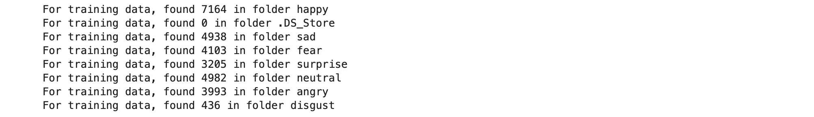
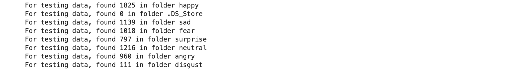
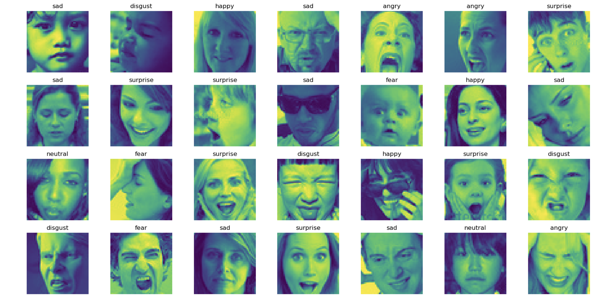
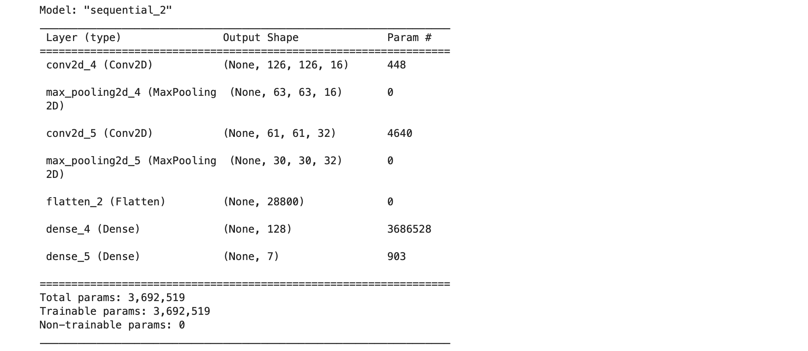
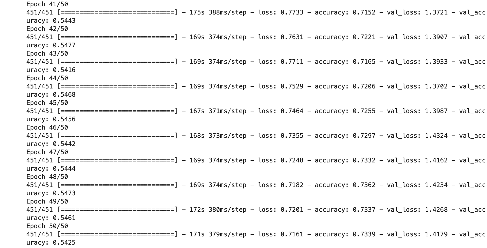
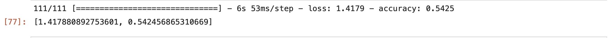
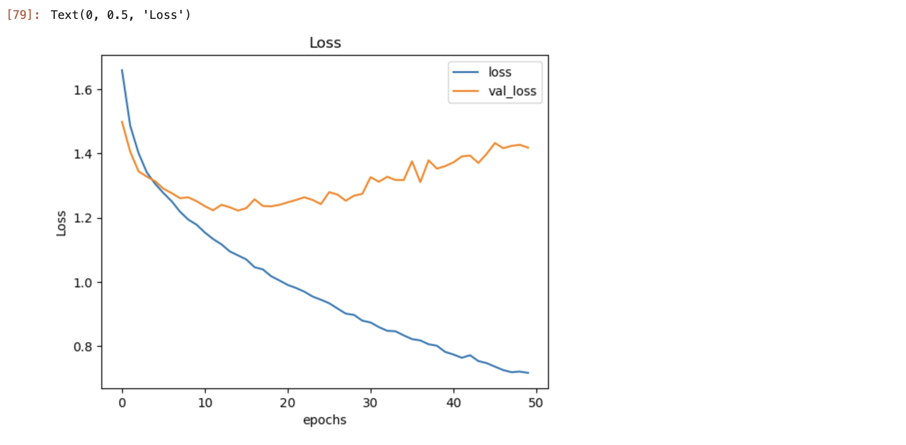
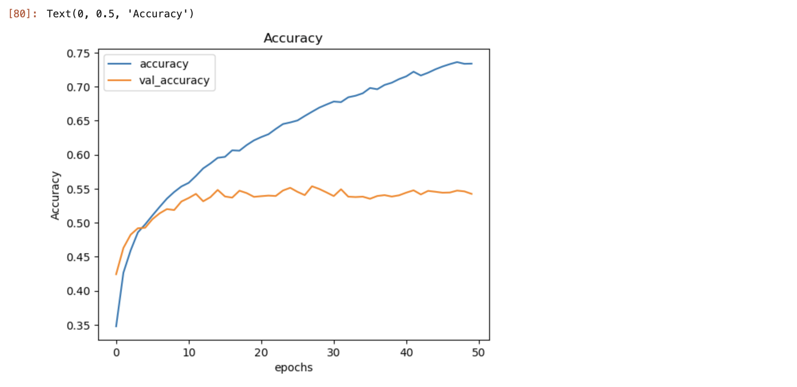
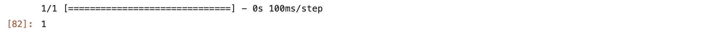
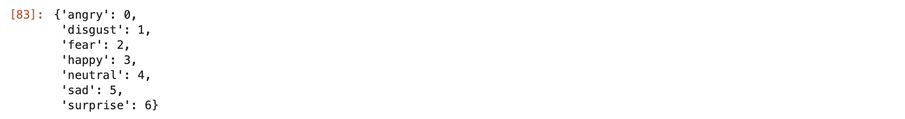

A facial recognition system is a technology capable of matching a human face from a digital image or a video frame against a database of faces. Such a system is typically employed to authenticate users through ID verification services, and works by pinpointing and measuring facial features from a given image[1]. Under this huge umbrella we are going to use one of its branches in this project i.e., facial emotion expressions to detect emotions of humans from a data set from Kaggle.
import pandas as pd
import os
import glob as gb
from tensorflow import keras
from keras.models import Sequential
from keras.layers import Conv2D
from keras.layers import MaxPooling2D
from keras.layers import Flatten
from keras.layers import Dense [2]
pandas - This library is used for manipulation if data and analysis of data[3].
os - This module provides a way to interact with the operating system. It can be used to access files, directories, environment variables, and other system-related information[3], which we use to get our images for training and validation while building the model.
glob – This module provides a way to find all the pathnames matching a specified pattern according to the rules used by the Unix shell, although results are returned in arbitrary order. It is often used to search for files in a directory that match a certain pattern[3].
tensorflow – This is used here due to its high performance capabilities in handling large-scale computation and matrix multiplication operations[3].
keras - This is a high-level neural networks API that is written in Python and can run on top of TensorFlow, CNTK, or Theano. It allows for fast experimentation with deep neural networks[3].
Storing the path of our dataset:
TRAIN_DIR = "/Users/akd/Facial Expressions/images/train/"
TEST_DIR = "/Users/akd/Facial Expressions/images/validation/"
BATCH_SIZE=64
Checking the total number of items in each folder of the dataset:
for folder in os.listdir(TRAIN_DIR):
files = gb.glob(pathname= str(TRAIN_DIR+ '/'+ folder + '/*.jpg'))
print(f'For training data, found {len(files)} in folder {folder}') [2]

for folder in os.listdir(TEST_DIR):
files = gb.glob(pathname= str(TEST_DIR+ '/'+ folder + '/*.jpg'))
print(f'For testing data, found {len(files)} in folder {folder}') [2]

import random
import matplotlib.pyplot as plt
import matplotlib.image as mpimg
def view_random_image(target_dir, target_class):
# We will view images from here
target_folder = target_dir + target_class
# Get a random image path
random_image = random.sample(os.listdir(target_folder), 1)
# read in the image and plot it using matplolib
img = mpimg.imread(target_folder+'/'+random_image[0])
plt.imshow(img)
plt.title(target_class)
plt.axis('off')
print(f"Image shape {img.shape}")
return img [2]
The above function returns a random image for our dataset.
class_names = ['angry','disgust','fear','happy','neutral','sad','surprise']
Creating a list with all the different expressions we have.
plt.figure(figsize=(20,10))
for i in range(28):
plt.subplot(4, 7, i+1)
class_name = random.choice(class_names)
img = view_random_image(target_dir="/Users/akd/Facial Expressions/images/train/", target_class=class_name)

Here we are trying to generate a total of 28 images from our dataset with a fixed grid size.
from keras.preprocessing.image import ImageDataGenerator
train_datagen = ImageDataGenerator(rescale = 1./255,
shear_range = 0.2,
zoom_range = 0.2,
horizontal_flip = True)
test_datagen = ImageDataGenerator(rescale = 1./255)
training_set = train_datagen.flow_from_directory(TRAIN_DIR,
target_size = (128, 128),
batch_size = BATCH_SIZE,
class_mode = 'categorical')
test_set = test_datagen.flow_from_directory(TEST_DIR,
target_size = (128, 128),
batch_size = BATCH_SIZE,
class_mode = 'categorical') [2]
The above code is used to pre-process image data for a machine learning model using the ImageDataGenerator class from the keras.preprocessing.image module.
The train_datagen object is created using ImageDataGenerator and contains various image augmentation techniques, such as rescaling, shearing, zooming, and horizontal flipping. These techniques are applied to the training set to increase the diversity of the data, thereby improving the generalization performance of the model.
The test_datagen object is also created using ImageDataGenerator but only rescales the test set images by a factor of 1/255.
The training_set object is created using the flow_from_directory() method from train_datagen, which takes the path to the directory containing the training set images, TRAIN_DIR, as input. It also sets the target size of the images to 128x128 pixels, the batch size to BATCH_SIZE, and the class mode to 'categorical', which means that the labels of the images are represented as one-hot encoded vectors.
Similarly, the test_set object is created using the flow_from_directory() method from test_datagen, which takes the path to the directory containing the test set images, TEST_DIR, as input.
These pre-processed data generators are then fed into a machine learning model to train and evaluate the model's performance on the facial expression classification task [3].
# Initialising the CNN
classifier = Sequential()
# Step 1 - Convolution
classifier.add(Conv2D(16, (3, 3), input_shape = (128, 128, 3), activation = 'relu'))
# Step 2 - Pooling
classifier.add(MaxPooling2D(pool_size = (2, 2)))
# Adding a second convolutional layer
classifier.add(Conv2D(32, (3, 3), activation = 'relu'))
classifier.add(MaxPooling2D(pool_size = (2, 2)))
# Step 3 - Flattening
classifier.add(Flatten())
# Step 4 - Full connection
classifier.add(Dense(units = 128, activation = 'relu'))
classifier.add(Dense(units = 7, activation = 'softmax'))
# Compiling the CNN
classifier.compile(optimizer = 'adam', loss = 'categorical_crossentropy', metrics = ['accuracy']) [2]
The above code initializes and compiles a Convolutional Neural Network (CNN) model with two convolutional layers, two pooling layers, one fully connected layer, and an output layer with softmax activation function for facial expression classification[3].
## model summary
classifier.summary() [2]

Checking the summary of our model so far.
history = classifier.fit(training_set,
epochs = 50,
validation_data = test_set)
classifier.save('model1.h5') # creates a HDF5 file 'my_model.h5' [2]

The code trains the CNN model using the pre-processed training set and validation set, for 50 epochs, and saves the trained model as an HDF5 file named 'model1.h5'[3].
Our model accuracy is 73% for train data and 54% for the test data.
classifier.evaluate(test_set) [2]

Evaluating our classifier with the test set.
pd.DataFrame(history.history)[['loss','val_loss']].plot()
plt.title('Loss')
plt.xlabel('epochs')
plt.ylabel('Loss') [2]

Plotting a graph for loss to check our results.
pd.DataFrame(history.history)[['accuracy','val_accuracy']].plot()
plt.title('Accuracy')
plt.xlabel('epochs')
plt.ylabel('Accuracy') [2]

Plotting a graph for accuracy to check our results.
model_path = "model1.h5"
loaded_model = keras.models.load_model(model_path)
import matplotlib.pyplot as plt
import numpy as np
import cv2
from PIL import Image
image = cv2.imread("/Users/akd/Facial Expressions/images/train/disgust/299.jpg")
image_fromarray = Image.fromarray(image, 'RGB')
resize_image = image_fromarray.resize((128, 128))
expand_input = np.expand_dims(resize_image,axis=0)
input_data = np.array(expand_input)
input_data = input_data/255
pred = loaded_model.predict(input_data)
result = pred.argmax()
result [2]

Checking our model prediction capability.
training_set.class_indices [2]

Checking our indices of different emotions.
In the above code we gave the model a disgust image to test and we can see that the model has predicted as the given image as disgust by checking the indices.
CNN, or Convolutional Neural Network, is a type of deep neural network that is commonly used for image analysis and processing. It uses a combination of convolutional layers, pooling layers, and fully connected layers to extract features from an image, reduce its dimensionality, and classify it into one or more categories. By leveraging the hierarchical structure of images and learning the relevant features, CNNs can achieve high accuracy in a variety of computer vision tasks such as object detection, facial recognition, and image segmentation[3]. This the model we used to train our model in the above code.